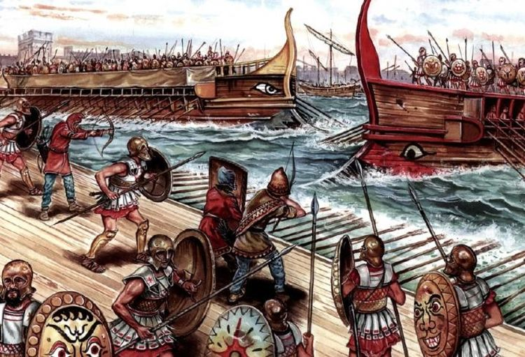
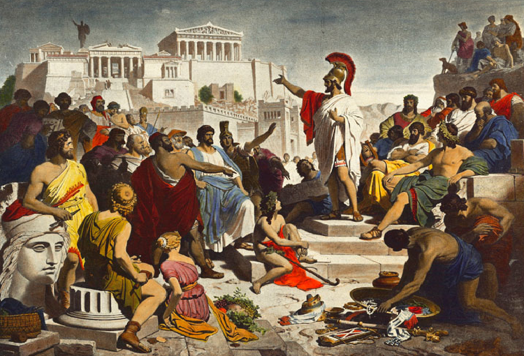
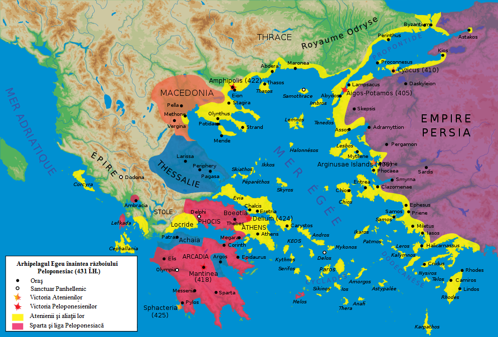
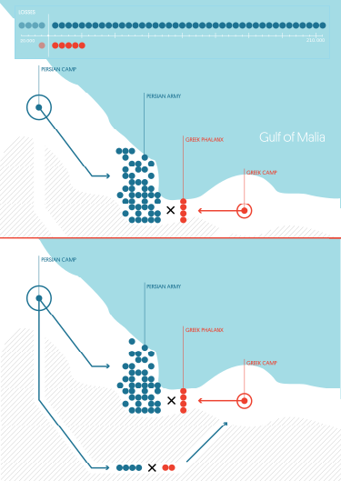
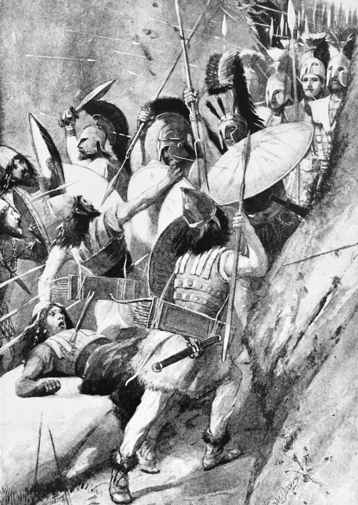
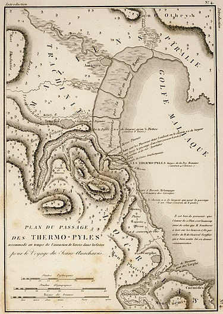

|  |  |
Războiul peloponesiac a fost un război grecesc străvechi purtat de Liga de la Delos condusă de Atena împotriva Ligii Peloponesiene condusă de Sparta. Istoricii au împărțit în mod tradițional războiul în trei faze. În prima fază, războiul arhidamian, Sparta a lansat invazii repetate ale Aticii, în timp ce Atena a profitat de supremația sa navală pentru a face raid pe coasta Peloponezului și a încerca să suprime semne de neliniște în imperiul său. Această perioadă a războiului a fost încheiată în 421 î.Hr., odată cu semnarea Păcii lui Nicias. Cu toate acestea, tratatul a fost subminat în curând de lupte reînnoite în Peloponez. În 415 î.Hr., Atena a trimis o forță expediționară masivă pentru a ataca Siracuza, Sicilia; atacul a eșuat dezastruos, odată cu distrugerea întregii forțe în 413 î.Hr. Aceasta a introdus faza finală a războiului, denumit în general fie Războiul Decelean, fie Războiul Ionic. În această fază, Sparta, primind acum sprijin din partea Imperiului achemenid, a sprijinit rebeliunile din statele supuse Atenei în Marea Egee și Ionia, subminând imperiul Atenei și, în cele din urmă, privând orașul de supremația navală. Distrugerea flotei Atenei în bătălia de la Aegospotami a pus capăt efectiv războiului, iar Atena s-a predat în anul următor. Corint și Teba au cerut ca Atena să fie distrusă și toți cetățenii săi să fie înrobiți, dar Sparta a refuzat.
Războiul peloponesiac a remodelat lumea greacă veche. La nivelul relațiilor internaționale, Atena, cel mai puternic oraș-stat din Grecia înainte de începerea războiului, a fost redusă la un stat de supunere aproape completă, în timp ce Sparta a devenit stabilită ca putere de conducere a Greciei. Costurile economice ale războiului au fost resimțite în toată Grecia; sărăcia a devenit răspândită în Peloponez, în timp ce Atena a fost complet devastată și nu și-a recăpătat niciodată prosperitatea înainte de război. Războiul a provocat, de asemenea, schimbări mai subtile ale societății grecești; conflictul dintre Atena democratică și Sparta oligarhică, fiecare dintre acestea susținând facțiuni politice prietenoase din alte state, a făcut ca războiul să apară în lumea greacă.
Ca urmare a războiului peloponezian, Sparta, care fusese în primul rând o cultură continentală, a devenit o putere navală. La vârf, Sparta a copleșit multe state grecești cheie, inclusiv marina de elită ateniană. Până la sfârșitul secolului al V-lea î.Hr., succesele Spartei împotriva Imperiului atenian și capacitatea de a invada provinciile persane din Anatolia au inaugurat o perioadă de hegemonie spartană. Cu toate acestea, această perioadă hegemonică avea să fie de scurtă durată. Pe de alta parte, democrația din Atena a fost răsturnată pentru scurt timp în anul 411 î.Hr. Cetățenii au reacționat împotriva înfrângerii Atenei, acuzând politicienii democrați, cum ar fi Cleon și Cleophon. Armata spartană a încurajat revolta, instalând o oligarhie pro-spartană în Atena, numită Treizeci de Tirani, în 404 î.Hr. Lysander, amiralul spartan care a comandat flota spartană la Aegospotami în 405 î.Hr., a ajutat la organizarea celor 30 de tirani ca guvern pentru cele 13 luni în care au menținut puterea. |
 |
Bătălia de la Termopile a fost purtată între o alianță de orașe-state grecești, condusă de regele Leonidas I al Spartei, și Imperiul Ahaemenid al lui Xerxes I. A fost purtată pe parcursul a trei zile, în timpul celei de-a doua invazii persane din Grecia. Bătălia a avut loc simultan cu bătălia navală de la Artemisium. A avut loc la pasul de coastă îngust al termopilelor („Porțile fierbinți”) în august sau septembrie 480 î.Hr.
|  |  |  |
O forță greacă de aproximativ 7.000 de oameni a mărșăluit spre nord pentru a bloca trecerea la mijlocul anului 480 î.Hr. Se zvonea că armata persană ar fi numărat peste un milion de soldați. Herodot, un scriitor contemporan, a pus puterea armatei persane la un milion și s-a străduit să descrie modul în care au fost numărați în grupuri de zece mii la o revizuire a trupelor. Simonides a mers până la cifra persană la trei milioane. Astăzi, se consideră că a fost mult mai mic. Savanții raportează diverse cifre cuprinse între aproximativ 100.000 și 150.000 de soldați. Armata persană a ajuns la pas la sfârșitul lunii august sau la începutul lunii septembrie. Grecii mult mai puțini în număr au reținut persii timp de șapte zile înainte ca garda din spate să fie anihilată într-una dintre cele mai faimoase tribune din istorie.
În timpul a două zile întregi de luptă, forța mică condusă de Leonidas a blocat singurul drum pe care putea trece masiva armată persană. După a doua zi, un localnic numit Ephialtes i-a trădat pe greci, dezvăluind o mică cale folosită de păstori. A condus persii în spatele liniilor grecești. Leonidas, conștient de faptul că forța sa era depășită, a demis cea mai mare parte a armatei grecești și a rămas să-și păstreze retragerea cu 300 de spartani și 700 de thespieni. S-a raportat că au mai rămas și alții, inclusiv până la 900 de eloți și 400 de tebani. Soldații rămași au luptat până la moarte. Majoritatea tebanilor s-ar fi predat.
Temistocle era la comanda marinei grecești la Artemisium când a primit vestea că persanii au luat trecerea la Termopile. Întrucât strategia greacă impunea deținerea atât a termopilelor, cât și a lui Artemisium, date fiind pierderile lor, s-a decis retragerea la Salamis. Persii au depășit Beotia și apoi au capturat orașul Atena, evacuat. Flota greacă - căutând o victorie decisivă asupra armatei persane - a atacat și a învins invadatorii la bătălia de la Salamis la sfârșitul anului 480 î.Hr. Preocupat de a fi prins în Europa, Xerxes s-a retras cu o mare parte din armata sa în Asia (pierzând cel mai mult din cauza foametei și a bolilor), lăsându-l pe Mardonius să încerce să finalizeze cucerirea Greciei. Cu toate acestea, în anul următor, o armată greacă a învins în mod decisiv persii la bătălia de la Plataea, punând astfel capăt invaziei persane.
Atât scriitorii antici, cât și cei moderni au folosit Bătălia de la Termopile ca exemplu al puterii unei armate patriotice care își apără solul natal. Performanța apărătorilor este, de asemenea, utilizată ca exemplu al avantajelor antrenamentului, echipamentului și bunei utilizări a terenului ca multiplicatori de forță și a devenit un simbol al curajului împotriva cotelor copleșitoare.